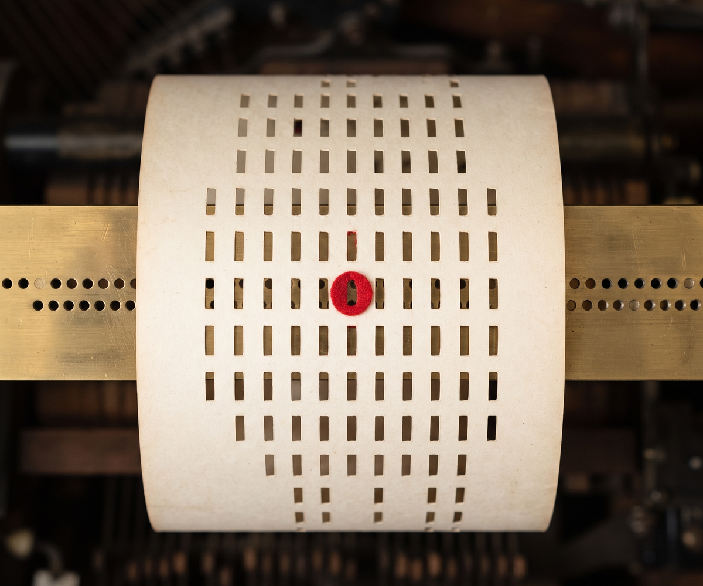
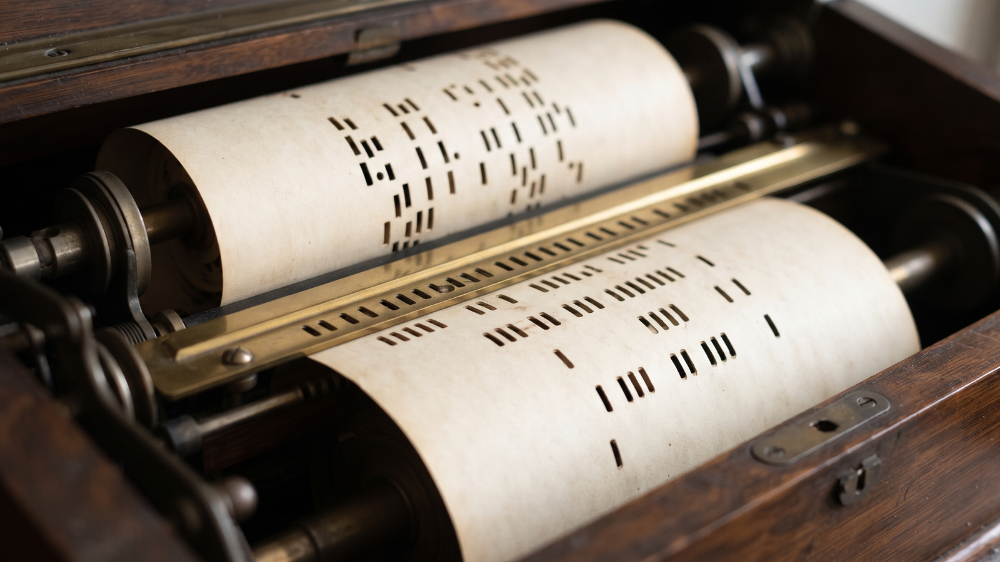
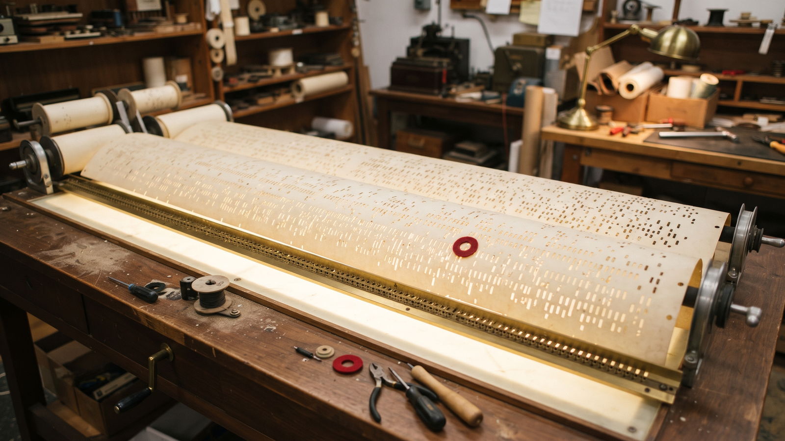

The Roll Comparison. Compares two binary files and reports the differences in their disassembled code, for vulnerability analysis and patch diffing.

python3 main.py FILE1 FILE2 [-a ARCH] [-o OUTPUT] [-v]
| Parameter | What it does |
|---|---|
FILE1 | The first binary file to compare. |
FILE2 | The second binary file to compare. |
-a, --architecture | Architecture of the binary files: x86 (default), x64, arm, or arm64. |
-o, --output | Output file to save the diff results. If not provided, the diff prints to console. |
-v, --verbose | Enable verbose logging. |
-h | Show help message and exit. |
